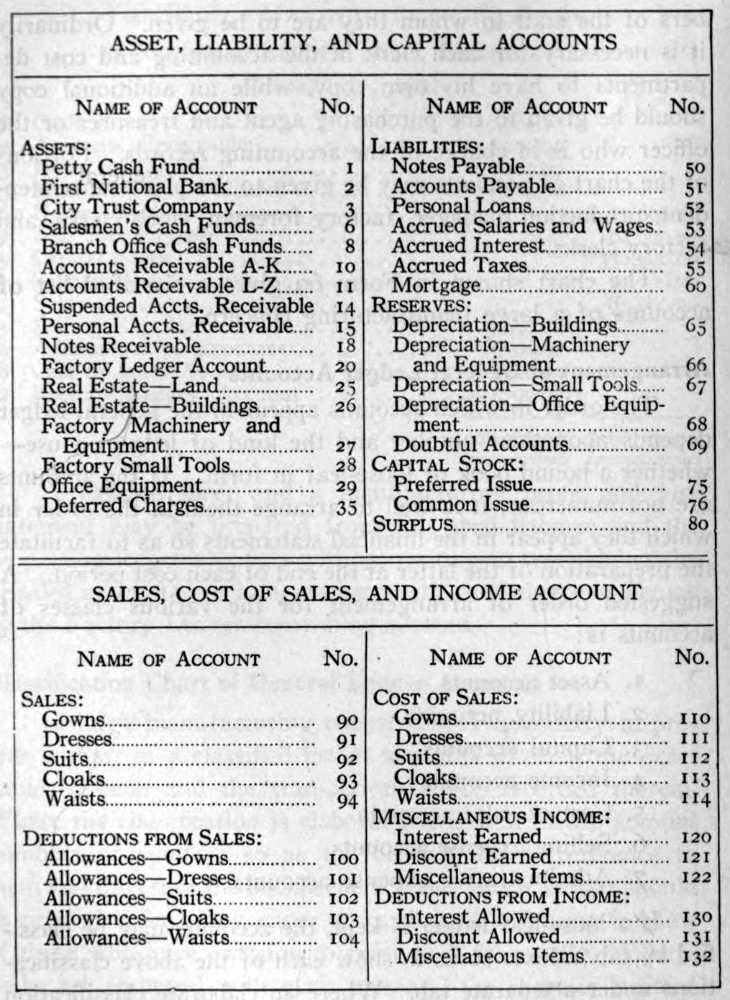
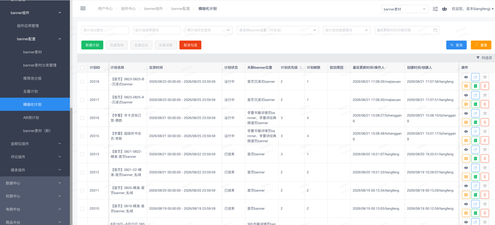
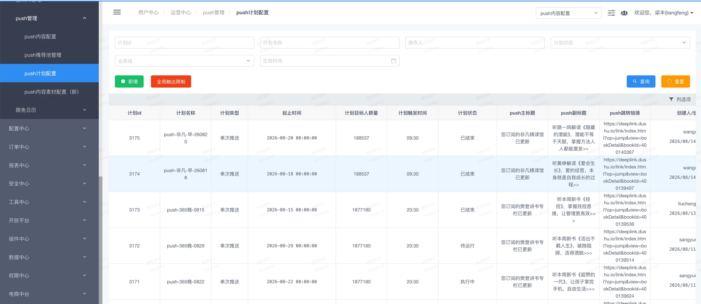
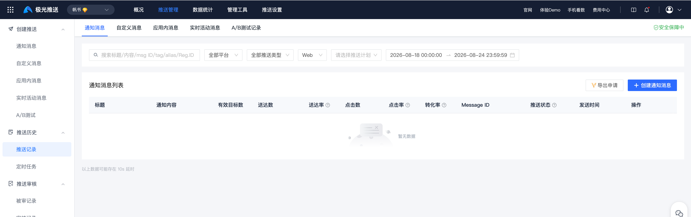
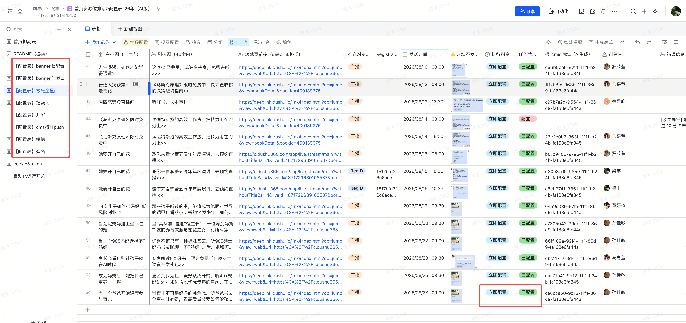

01
机械重复
每次操作几乎一样，却必须全神贯注防出错。
这不是一次工具演示，而是一次工作方式的变化：把重复、机械、低价值的事交给 AI，把人的时间还给更值得做的地方。

工具出现以后，人的工作不再是“把表做出来”，而是开始定义规则、判断结果。
当一件小事重复到让你怀疑“这不该是人做的”，变革就来了。
它要把资源申请、排期、物料、后台配置、审核和上线串成一条线，任何一步都不能断。



不是一键生成，而是人和 AI 反复接力，直到它真的能跑。
人负责“定义问题 + 判断结果”，AI 负责“文档、开发和辅助 review”。
先写清楚，再让它写出来；先审文档，再写代码；先测试，再验收。
不是“一步到位”，而是让人和 AI 在每个关口都各自负责最擅长的事。
需求方只需要填表，程序就能自动配置；人保留最后的审核和上线判断。
一个表格，搞定反复沟通和配置效率。

省出来的不只是时间，更是认知带宽。
自动化只是起点，真正的题目是：省下来的时间，最终会流向哪里？
如果这件事带来了一点启发，那它真正值得传播的，不只是自动化本身，而是把重复劳动交出去的那种可能。